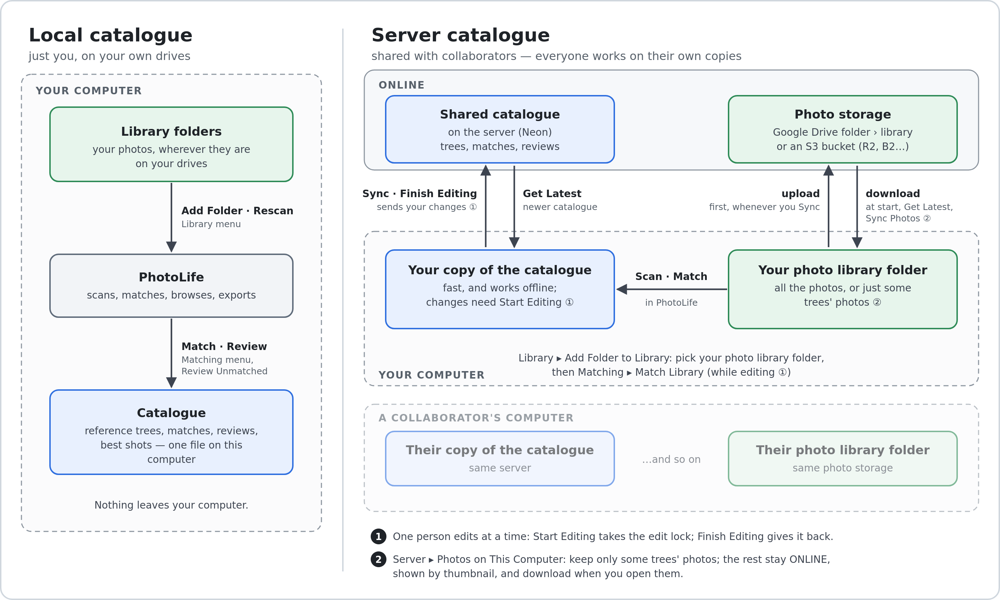

PhotoLife builds a catalogue alongside your nature-photo library and hangs each photo on the tree of life. It never moves, renames or deletes the photos in your library — it reads them and keeps its own database. (The one exception is Organise New Photos, which moves a new download folder's photos into taxon folders — only when you commit, never deleting anything, and it can be undone.) The only times it writes to a photo file are when you explicitly ask it to (see What PhotoLife writes to your photos).
Steps 2–4 need an internet connection (they query the iNaturalist API); everything is cached, so afterwards PhotoLife works offline. If you post to iNaturalist, the iNaturalist tools can also download your own observations into the library and compare your iNaturalist list with your trees.
The toolbar (and the View menu) has four mutually-exclusive modes:
The Reference Trees panel on the left (tree picker, search box, tree, coverage summary) stays visible no matter which mode you're in, so you can still search or select a taxon while reviewing or browsing the whole library.
After a day out, copy the day's photos into a folder (say Anakie 2025-10-18), then choose Organise → Open Download Folder… (or View → Organise New Photos). The photos appear as a filmstrip in the order they were taken — RAW and JPEG of a shot together — with the selected photo large below it. The mouse wheel scrolls the strip; Grid shows them all at once (F11 for full screen).
Move the organised folder into your library as usual — or organise it where it already is inside the library, and PhotoLife catalogues the new folders straight away; named after their taxa, they match automatically.
Library → Add Folder to Library… and choose a folder. PhotoLife walks it, records every image, and groups a RAW file and its same-name JPEG as one capture. It skips junk (Thumbs.db, sidecar files, folders like “To Sort and Upload”).
It watches your folders afterwards and re-scans automatically when they change. Library → Rescan Library (F5) forces a full re-scan; unchanged files are never re-read, and Stop Scan cancels one in progress. A file you rename or move keeps its matches and thumbnail — PhotoLife recognises it by its contents.
Library → Manage Library Folders… lists the folders being watched, flags any that have gone missing, and lets you stop watching one (its catalogued photos are kept). Library → Remove Photos With Missing Files… finds catalogued photos whose file has since vanished (moved or deleted outside PhotoLife) and lets you drop them from the catalogue.
Your folder names matter: a Family / Genus / Species tree with scientific names in the file names matches best, but PhotoLife copes with synonyms, misspellings, sp., hybrids, aggregates, and common-name folders for fauna.
Library → Import Lightroom Catalog… reads the keywords you've tagged photos with in Adobe Lightroom Classic (a .lrcat file) and uses them as an extra matching hint alongside folder and file names — handy for photos whose file names don't name the species. It needs a reference tree to exist first. Your Lightroom catalog is only read, never changed.
Reference Tree → New Reference Tree… Give it a name, a root taxon (Orchidaceae), an optional rank, and a region (Victoria, AU — leave blank for worldwide). PhotoLife looks up the place and taxon on iNaturalist and asks you to confirm the exact match for each before building — useful when a name is ambiguous. Once confirmed, it pulls the region’s species list and fills in the intermediate ranks so the tree is connected from kingdom down to species. A very large tree pauses every few thousand species to ask whether to keep going.
You can keep several trees and switch between them with the drop-down at the top of the Reference Trees panel on the left. From the Reference Tree menu:
Common names in folder and file names. A folder or photo named with a common name (“Flame Robin”) matches automatically when that name means just one species (or subspecies) in your trees; differences in hyphens, spaces and apostrophes don't matter (“Superb Fairy-wren” finds “Superb Fairywren”, “Lathams Snipe” finds “Latham's Snipe”), nor does “Robin, Flame” order. A folder can give both names — “Flame Robin · Petroica phoenicea” or “Flame Robin (Petroica phoenicea)” — and they're checked against each other. A group's common name (“Sun Orchids”), or one shared by several taxa, goes to Review Unmatched. A Common name column in an imported tree file is used the same way.
Right-click a taxon in the tree for more:
The Search taxa box under the drop-down jumps the tree to a taxon as you type — matching its scientific or common name — and press Enter to step through the other matches. If the right pane is on Photos of Tree Selection it follows along, showing that taxon’s photos. A match hidden by the “photographed only” filter un-hides it. The Ranks… button lets you hide ranks you don't care to see in the tree (e.g. collapse straight to species, skipping family/genus rows).
Reference Tree → Export Reference Tree… saves the current tree as an Excel workbook (.xlsx) or a CSV file, with one row per taxon at every rank, in tree order. The first columns are for reading: rank, scientific and common name, the kingdom, phylum, class, order, family and genus each taxon sits in, its conservation status and origin, and whether it's recorded in the tree's region. Four more say how much of it you've photographed: Photographed (yes/no, counting photos of anything below it too), Photos, Latest photo, and for genera, families and other higher ranks Species photographed (e.g. 12 / 40) — filter on Photographed = no for a list of what's still to find. These describe your photos, not the tree, so importing ignores them. The columns after those (collapsed in the workbook; click the + above them to show them) hold what PhotoLife needs to rebuild the tree exactly: iNaturalist IDs, ancestry, and every recorded status and origin. The workbook's Tree sheet (or the # lines at the top of a CSV) holds the tree's name, root taxon, region and any groups you've pruned.
Reference Tree → Import Reference Tree… creates a new tree from such a file — to restore a backup, or to use a tree someone else exported. An exported file imports in seconds without needing the internet. You can also import a file you've made or edited yourself: only a Scientific name column (or Name, Species or Taxon) is required. Rows without an iNaturalist ID are looked up on iNaturalist, like a checklist's, and any missing higher ranks are fetched so the tree stays connected. Optional Common name, Status and Origin columns are read too.
Reference Tree → Import Checklist… and pick a CSV of <name>,<conservation status> rows, optionally with whether each taxon is native or introduced (an Origin column, a third column holding values like *, introduced or native, or a * before introduced names, as VicFlora and the VBA use) (such as a state vascular-plant list). PhotoLife adds any species in the current tree’s genera — including rarities with no iNaturalist observations — and records their threat status, which then shows in the coverage panel and the tree tooltips.
A status belongs to the species, not to one tree: rows outside the current tree’s genera aren't added to it, but if PhotoLife already knows the species (from any of your trees), its status is still recorded, so every tree containing it counts it. For a broad list such as all of a state's vascular plants, import it into your broadest matching tree (e.g. Vascular Plants of Victoria) so its rarities are added too.
A checklist's statuses are recorded for the region of the tree you import it into, and each tree counts only statuses listed for its own region or a region containing it. A Victorian list therefore counts in Vascular Plants of Victoria and in a Grampians or Brisbane Ranges tree, but not in a South Australian or Australia-wide tree. PhotoLife asks iNaturalist which regions lie within which (in the background, once per region); until it knows, it compares the regions' map boundaries.
Introduced species follow the same regional rule. Besides a checklist's origin column, PhotoLife asks iNaturalist, in the background, which of each tree's taxa are introduced in the tree's region.
For trees in Australia, PhotoLife also fetches, in the background and about once a month:
Only species already in your trees are matched, so after building or importing a tree PhotoLife re-matches automatically, using the lists it has already downloaded (both are kept on disk and shared by all your catalogues).Reference Tree → Update Threatened & Introduced Status (Australia) forces a fresh download of both, showing a progress window (list by list for the ALA, megabytes for the APC) that you can cancel; anything already saved is kept.
When several records apply to a species, the most specific region wins (a state's listing over the EPBC list), then the more authoritative source: for threatened status, the ALA's lists over an imported checklist (a checklist still supplies categories the ALA doesn't have, such as Victoria's advisory “Rare”); for native/introduced, the Australian Plant Census, then a checklist, then iNaturalist. The APC has no nation-wide flag, so an Australia-wide tree's introduced counts come from iNaturalist.
Matching → Match Library. PhotoLife first rescans the library, so files and folders you've just renamed or moved are matched under their new names (this normally takes a second or so, since unchanged files aren't re-read). Then, for each capture, it parses the folder path and the file name (plus any Lightroom keywords), reconciles them against the cached taxonomy (including synonyms), scores the result, and either applies it automatically or puts it in the review queue. A progress window shows both steps — the scan, then each photo being matched — for the whole library and for Match Library Against “…” on a single taxon or group alike. Cancel stops whichever step is running; matches already made are kept, and if the scan is stopped the match is skipped.
Automatic matches simply follow a renamed file to its new name. A decision you made yourself is never changed without asking: if you rename a photo you've identified, and its new name points to a different taxon, Match Library asks rather than guessing. After the run, a Renamed Photos window lists each such photo with what you identified it as and what its name now says. Checked photos are re-associated with the taxon in their new name. Unchecked photos keep your identification and aren't asked about again unless renamed once more. Decide Later changes nothing. The first run after updating also lists older identifications whose file names clearly contradict them.
In the All Library Photos view a coloured dot on each thumbnail shows its status: ● automatic, ● needs review, ● unmatched, ● confirmed by you. The Show box in the toolbar filters by status, and View → Display… chooses which fields (name, matched taxon, date, filename, locality, file type) appear under each thumbnail in the photo grids.
Right-click a photo (here or in any other grid) to open it in your file manager, star or unstar it as a best shot, remove it from the catalogue, or Attempt to fetch coordinates from iNat (see below).
Switch to the Review Unmatched view. The list on the left shows everything PhotoLife was unsure about, grouped by matching name; Collapse all/Expand all and the Filter photos box (by name, folder or guess) help you work one genus at a time. For the selected photo you see it side-by-side with an iNaturalist reference photo of the highlighted candidate, the engine’s guess, a ranked list of alternatives, and a taxon search box. Then:
Most of these have keyboard shortcuts — see Keyboard shortcuts — so you can work through a long queue without reaching for the mouse.
The Photos of Tree Selection tab follows your selection in the tree: pick a taxon and you see its cover photo, its details, and a grid of just its photos. The Reassign to Taxon… button moves the selected photos (or, with none selected, every photo shown) to a different taxon. The Coverage column in the tree shows a ✔ for photographed species, a · for missing ones, and a “have / total” count on genera and families.
The panel under the tree summarises the whole tree: species photographed, threatened-taxa coverage broken out by status (listed subspecies and varieties count as taxa in their own right), introduced species photographed (on the right, with the share of the tree's species they make up), the most recent capture, and how many reference photos are cached. Hover a taxon in the tree to see its status and whether it's introduced. Click the threatened summary, or any one status tier, to filter both the tree and the photos to just those taxa; Clear filter undoes it. While filtered, those species are coloured in the tree: green ✔ for ones you've photographed, red ✗ for ones you haven't. Click the introduced summary on the right to do the same for the tree's introduced species: they're shown in blue with an asterisk in the Coverage column (✔ * if you've photographed them, * if not). The introduced and threatened filters replace each other; click the active one again, or Clear filter, to go back to the whole tree.
The Unphotographed Taxa tab is a plain list of the gaps, with its own filter box — activate an entry to jump to it in the tree, or right-click it to view its reference photo. The Only taxa I’ve photographed checkbox above the tree collapses it to just the branches you have a photo somewhere in — a quick “what have I got” view. Untick it to see the whole reference tree again.
The coverage box beside it filters to Fully covered taxa (Coverage X / X, or ✔ for a species) or Not fully covered ones, among the ranks you've chosen to show with Ranks…. For example, show only genera and pick Not fully covered to list the genera you're still missing species from. Greyed rows aren't a match themselves; they're only there as the path to one (such as the incomplete family a complete genus belongs to). It combines with Only taxa I’ve photographed: together with Not fully covered they show taxa you've photographed some, but not all, of.
The Not in Any Tree tab lists taxa your photos are matched to that are missing from your trees — for example a subspecies a tree doesn't list, or a species outside every tree's scope. Its Show box switches between taxa not in any tree, taxa not in the selected tree, and photos identified only to genus or higher. Select taxa to see their photos; right-click one (or use Add to Selected Tree) to add it to a tree.
The Reference Photos tab shows one iNaturalist photo per species in the current tree, for comparison while you're out identifying things. PhotoLife fetches missing ones automatically the first time you open the tab for a tree with gaps, or on demand via Reference Tree → Fetch Reference Photos.
Export Contact Sheet… on the tab (also Reference Tree → Export Reference Photo Contact Sheet (PDF)) saves the photos it currently lists — the whole tree, or just the selected branch — as a printable PDF grid of thumbnails with their names. Pick the page size and how many thumbnails per row (Small, Medium, Large or a custom count), a title and subtitle, whether to show the date, species count and page numbers, and optionally group the photos under Order, Family or Genus headings — each group on a new row, or (with Start each group on a new row off) as one continuous, full grid with a small label above each group’s photos. Names too long for a narrow thumbnail are shrunk or wrapped onto a second line, never cut off. Most iNaturalist photos are Creative Commons licensed, so photo credits are included by default as a numbered list on a final page; they can go under each photo instead, or be left out. Photos not yet downloaded are fetched first.
Right-click any of your own photos (in any grid) to star it as the Best Shot of its species — only available once the photo is identified. Starred photos get a gold star badge on their thumbnail and show up together in the My Best Shots tab. The full-size viewer also has an Add/Remove Best Shot button.
The Map tab plots every geotagged photo in the current tree selection as a pin on an OpenStreetMap view, scoped exactly like Photos of Tree Selection. Drag to pan, scroll to zoom, and use Fit to Photos to frame everything in view — it does this automatically whenever you change the tree selection. The active tree's region is outlined and lightly shaded, using the boundary iNaturalist has for that place (fetched once, in the background); turn this off with View → Show Tree Locality on Map. Restrict to Active Reference Tree Locality hides photos taken outside that boundary. For the few places iNaturalist has no boundary for, the region's bounding rectangle is used instead, which takes in a little of the neighbouring regions. Photos taken close together cluster into one pin showing a count; click a single-photo pin to open it. Clicking a cluster lists the taxa photographed there, each with its number of photos; click a taxon to see its photos, then a photo to open it. ‹ All taxa goes back to the list, and the ✕ button, Esc or a click elsewhere on the map closes it. Only photos whose file carried GPS data appear here — look for the GEO badge on a thumbnail elsewhere in the app, or hover it for the exact coordinates.
Library → Fetch Photo Localities looks up a place name (suburb, park, region) for each geotagged photo from OpenStreetMap. It goes slowly, to respect OpenStreetMap's usage limits, and remembers results, so it only needs doing once per photo. Turn on Locality under View → Display… to show it under thumbnails.
Reference Tree → Export Photo Collection… copies the current tree's matched photos into a folder structure that mirrors the tree — a tidy copy to share or back up. Your originals stay where they are. You can include automatic matches or just the ones you've confirmed, create folders for taxa you haven't photographed yet, match exactly what the tree is currently showing, and put common names in folder names. Untick Include RAW files to copy only JPEGs and keep the collection small; photos that have only a RAW file are then left out. Or choose Thumbnails only to write a small 256 px JPEG for each photo instead of its original files — made from its JPEG, or from its RAW file when there's no JPEG, and keeping its date taken, camera and GPS location. A collection keeps whichever it was first exported with. A preview shows which photos will be copied.
Copies keep their original filenames unless you tick Rename the copied files
using a naming pattern. Naming Pattern… opens a tool for building your
own naming protocol from parts: scientific name, common name, date taken, time taken,
year, town, state, country (from the photo's GPS location), author, the original
filename, a sequence number and any fixed text you type. Put the parts in order, choose
the separator and date format, and the preview shows the names a few of your own photos
would get, for example Caladenia_carnea_2020-01-09_Anglesea_001.jpg.
A collection keeps the naming pattern it was first exported with, so updating it doesn't add second copies under new names. When an update renumbers photos, copies already in the collection are recognised by their content.
Choose Update an existing collection to add new photos to a collection you exported before; PhotoLife checks it's the right folder, skips photos already there, and lists any files in the collection it didn't put there.
Before copying anything, PhotoLife checks the destination can be written to, so a drive that's unplugged or a network or cloud mount that's offline is reported straight away. If the destination stops responding partway through, the export stops and says so. Photos that couldn't be copied are listed, and exporting again later picks up where it left off. Cloud-drive mounts (such as rclone) need to be online to export to; to work offline, export to a local folder and sync that folder to the cloud separately.
The iNaturalist view (toolbar, View menu or iNaturalist Tools menu) holds the features that work with an iNaturalist account rather than a particular reference tree. The account bar at the top is shared by all of them: your iNaturalist username, and optionally a personal API token from inaturalist.org/users/api_token (it expires after about 24 hours). Without a token, geoprivacy-obscured species come back with fuzzed coordinates, even for your own observations. iNaturalist Tools → iNaturalist Account jumps straight to it.
Download My Observations finds photos from your own observations that aren't in your library yet.
Compare Species sets an iNaturalist observer's taxa against your reference trees and photo library — for example, to find species you've recorded on iNaturalist that are missing from a tree.
Double-click any thumbnail to open the full-size viewer. Previous/Next (or the Left/Right and Page Up/Down keys) move through the current set, Home/End jump to the ends, and Esc closes it. The star button adds or removes the photo as a best shot. If the photo has GPS data, View on Map opens its location in your browser.
Matching → Learned Names… lists the corrections PhotoLife has picked up from your reviewing. Forgetting one puts the affected photos back in the queue on the next Match Library run.
Everyday use — scanning, matching, reviewing, browsing — only ever reads your photos. PhotoLife writes files only when you ask it to:
PhotoLife keeps completely separate catalogues, each with its own reference trees, photos, folders and review queue:

The top right of the window always says which catalogue is open — Local catalogue with a LOCAL CATALOGUE badge, or Server: name with the server badge — and so does the window title. Click it (or File → Switch Catalogue) to open another; PhotoLife restarts into it. Switching never copies anything between catalogues. File → Manage Catalogues… lists them all, and adds, edits or removes servers. To bring a reference tree from one catalogue into another, export it (Reference Tree → Export Reference Tree…) and import it there.
One person edits a server catalogue at a time — there is never anything to merge.
The server holds the catalogue, not the photos. Each person needs the photos in their own photo library folder, and there are two ways to get them there (Server → Server Settings… → Photo storage):
Setting up Google Drive (once, by one person):
Then each person, in Server Settings → Photo storage, enters the client ID and secret, pastes the folder's link, clicks Sign In with Google… and approves in the browser, then Test Photo Storage. Until Google reviews the OAuth client, it works only for the listed test users, and each sign-in lasts 7 days — when it runs out, PhotoLife says so and you sign in again (an Internal Workspace client doesn't have this limit). For a large library, an S3-compatible bucket is simpler to run.
When PhotoLife syncs the photos:
A big shared library doesn't have to fit on every computer. Server → Photos on This Computer… keeps either every photo, or only the photos of the reference trees you tick — each listed with how many photos it has and how much space they take. Everyone chooses for themselves; it changes nothing for the others.
Cloudflare R2 has no charge for downloads, so it suits a library several people download in full. The access key and secret are stored in your OS settings, not encrypted, like the catalogue password.
The catalogue database, thumbnail cache, reference-photo cache and map-tile cache live in your user data folder (~/.local/share/PhotoLife on Linux, %LOCALAPPDATA%\PhotoLife on Windows). Deleting that folder resets PhotoLife without affecting a single photo in your library.
When a shot has both a RAW and a JPEG, PhotoLife shows the JPEG. For a RAW with no JPEG sibling it reads the embedded preview — if this build was compiled with LibRaw. Otherwise a RAW-only capture shows a plain placeholder tile; the photo is still fully catalogued and matched.
If some of your RAW photos show up in the wrong place on the map, run Library → Fix RAW Photo Locations… once — it corrects a since-fixed bug where a RAW file's GPS hemisphere (north/south, east/west) could be read incorrectly. It only re-reads location data; nothing else about your catalogue changes.
| Ctrl+O | Add Folder to Library |
| F5 | Rescan Library |
| F1 | This help |
| Ctrl+Q | Quit |
| In Review Unmatched: | |
| Ctrl+Enter | Confirm |
| Ctrl+Backspace | Reject |
| Ctrl+G | Genus only |
| Ctrl+Shift+N | Not a taxon |
| Ctrl+Right | Skip |
| Ctrl+Shift+F | Apply to folder |
| Ctrl+T | Use Selected Taxon on Tree |
| Ctrl+Z | Undo the last decision |
| In the image viewer: | |
| ← / → | Previous / next photo |
| Home / End | First / last photo |
| Esc | Close the viewer |
For scripting and first-time bulk imports, the same steps are available headless:
PhotoLife --scan <folder> PhotoLife --build-project "<name>" --taxon <taxon> --rank <rank> --place "<region>" PhotoLife --import-checklist <file.csv> --into "<project>" --source "<label>" PhotoLife --import-lightroom <catalog.lrcat> --into "<project>" PhotoLife --match
--match also prints any photos you identified that have since been renamed to a different taxon; settle those in the app with the next Match Library.
PhotoLife — taxonomy, species lists and observations from the iNaturalist API; map tiles and place names from OpenStreetMap.